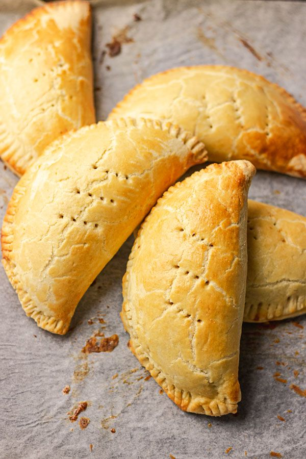

Nigerian Meat pie is one of Nigeria’s popular snack and it’s loved by all. The buttery shortcrust pastry is filled with mincemeat cooked in rich flavour. It is delicious and you won't be able to stop at one. Do you want to learn how to make a perfect meat pie? this recipe is for you.